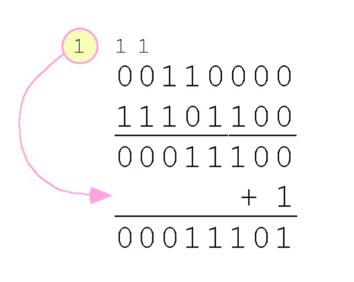

Module 2
- Reading Notes
- 1's and 2's complement of a Binary Number
- Overflow ** has quiz
- Boolean Algebra ** has quiz
- Sum of Products Form ** has quiz
- Class Notes
Reading Notes
1) 1's and 2's complement of a Binary Number
1's complement: obtained by flipping every (0 -> 1 and 1-> 0)
- Traverse the binary string and flip every bit: replace 0 with 1, 1 with 0
2's complement: obtained by adding 1 to the 1's complement
- Compute the 1's complement
- Starting from the least significant bit (LSB), add 1
- Propagate the carry until it becomes 0
- If no 0 is found while adding 1, insert 1 at the beginning of the result.
Example (1):
- Input: s = "0111"
- 1's Complement = 1000 (8)
- 2's Complement = 1001 (9)
Example (2):
- Input: s = "1100"
- 1's Complement = 0011 (3)
- 2's Complement = 0100 (4)
Algorithm
- Traverse the binary string and flip every bit to obtain the 1's complement
- Copy the 1's complement
- Traverse from right to left to add 1
- If no 0 is found while adding, prepend 1
- Return both complements
Time complexity: O(n); Auxillary Space: O(n)
2) Overflow
An overflow happens when the result of an addition operation exceeds the capacity of the fixed bit allocation, resulting in an inaccurate value and possible sign errors in signed arithmetic
- Limited memory, excess bits, erroneous result
Conditions of Overflow
- Addition of two positives
- when adding two + and the result is more than max amount that an N-bit system can hold → overflow takes place
- Addition of two negatives
- two negatives are added result less than minimum value that can be represented
- Variety of carry in and carry out bits
- is carry in and carry out of the MSB are different, you have overflow.
3) Boolean Algebra
Logical Operations
- Negation / NOT operation
- Symbol: ' (or) ⇁
- Precedence: First
- Conjunction / AND operation
- Symbol: . (or) ∧
- Precedence: Second
- Disjunction / OR Operation
- Symbol: + (or) ∨
- Precedence: Third
Boolean Expressions and Variables
Boolean expressions produces a boolean value when evaluated
Truth Tables
Represents all the combinations of input values and outputs in a tabular manner. All the possibilities of the input and output are shown in it.
Dual → swap ANDs and ORs
4) Sum of Products Form
Type of SOP Forms
- Non-canonical SOP Form
- One or more product terms may not contain all variables of the Boolean function
- (ex.) F(A, B, C) = A + B.C + A.C
- Term A does not contain B and C
- The product term B.C does not contain the variable A
- The term A.C doesn't contain B
- Canonical SOP Form
- Every product term contains all the variables of the Boolean function
- (ex.) F(A,B) = A'B + AB'
- Term A'B contains both A and B
- Same for term A.B'
SOP Expressions Advantages and Disadvantages
| Advantages | Disadvantages |
|---|---|
|
|
MISC
- On truth table...
- Sum of minterms (Σm) → list all the indices where F = 1
- Product of maxterms (ΠM) → list all the indices where F = 0
- Minterms and maxterms always complement each other
- Σm → canonical SOP
- Figure out how many (n) variables there are. (Variables inside F())
- Convert each minterm index into binary padded to n bits
- For each bit in that binary number turn it into a literal in accordance to the letters in F()
- AND those literals together to form one product term per minterm
- OR all products terms together to form canonical SOP
- maxterms (ΠM → canonical POS)
- Same way as above but flipped.
- Bit = 0 → variable as is
- bit = 1 → variable complemented
- OR the literals within each term and AND the terms together
Class Notes
Introduction
- A bit is the most basic unit of information in a computer
- Byte is group of 8 bits.
- A byte is the smallest possible addressable unit of computer storage
- Means that a particular byte can be retrieved according to its location in memory.
- A word is a contiguous group of bits.
- Words can be any number of bits/bytes
- Word sizes 16, 32, or 64 bits are most common
- In a word-addressable system, a word is the smallest addressable unit of storage
Positional Numbering Systems
Binary systems store numbers using the position of each bit to represent a power of 2
Signed Integer Representation
- So far we've been only talking about unsigned numbers.
- unsigned numbers are numbers that can only be positive or zero. They don't have a negative sign.
- To represent signed integers, computer systems allocate the high-order bit to indicate the sign of a number
- The high order bit is the leftmost bit. It is also called the most significant bit.
- 0 --> positive num; 1 --> negative num
- The remaining bits can contain the value of the number (but this can be interpreted different ways)
- There are 3 ways in which signed binary integers may be expressed:
- Signed magnitude
- One's complement
- Two's complement
- In an 8-bit word, signed magnitude representation places the absolute of the number in the 7 bits to the right of the sign bit.
- (ex.) 8-bit signed magnitude representation
- +3 is 00000011
- -3 is 10000011
- Computers perform arithmetic operations on signed magnitude numbers in much the same way as humans carry out pencil and paper arithmetic
- Binary addition rules:
- 0 + 0 = 0
- 1 + 0 = 1
- 0 + 1 = 1
- 1 + 1 = 10
- The simplicity of this system makes it possible for digital circuits to carry out arithmetic operations
- The signs in signed magnitude representation work just like the signs in pencil and paper arithmetic.
- (ex.) Using signed magnitude binary arthmetic find the sum of -46 and -25
- Because the signs are the same, all we do is add the numbers and supply the negative sign when we are done.
- Mixed sign addition (or subtraction) is done the same way
- 1 - 1 = 0
- 0 - 0 = 0
- 1 - 0 = 1
- 0 - 1 = borrow (10 - 01 = 01)
- The sign of the result gets the sign of the number that is larger
Signed Magnitude Disadvantages
- Signed magnitude representation is easy fo people for understand, but it requires complicated computer hardware
- Addition and subtraction have different logic, need to be separate modules
- Mathematicians and scientists hate dealing with positive zero and negative zero
- For these reasons, computer systems employ complement systems for numeric value representation
One's Complement
- One's complement is simple: just flip the bits, and you have the negative version of a positive number
- (ex) +3 is 00000011, -3 is 11111100
- In one's complement representation, as with signed magnitude, negative values are indicated by a 1 in the high order bit
- Complement systems are useful because they eliminate the need for subtraction The difference of two values is found by adding.
One's Complement Subtraction:
- With one's complement addition, the carry bit is "carried around" and added to the sum
- (ex.) Using one's complement binary arithmetic, find the sum of 48 and -19

- Although the "end carry around" adds some complexity, one's complement is simpler to implement than signed magnitude
- But it still has the disadvantage of having two different representations for zero: positive zero and negative zero
- Two's complement solves this problem.
Two's Complement
- To express a value in two's complement representation:
- If the number is positive, just convert it to binary and you're done
- If the number is negative, find the one's complement of the number and then add 1.
- Example:
- In 8-bit binary, 3 is 00000011
- -3 using one's complement representation: 11111100
- Add 1 gives us -3 in two's complement form: 11111101
- With two's complement arithmetic, all we do is add our two binary numbers. Just discard any carries emitting from the high order bit.
To Note
- Signed Data Types (int8_t, signed char)
- The left most bit (most significant bit) acts as a sign bit
- A leading 1 indicates a negative value; a leading 0 indicates a positive value.
- Uses Two's Complement representation, making the leftmost bit worth -128 in an 8 bit number.
- Example: 11101101 → -128 + 64 + 32 + 8 + 4 + 1 = -19
- Unsigned Data Types (uint8_t, unsigned char)
- All bits represent positive magnitude values; there are no negative numbers
- The leftmost bit is just a regular power of two (+128 in an 8-bit number)
- Example: 11101101 → +128 + 64 + 32 + 8 + 4 + 1 = 237
- Key Takeaway
- The binary sequence in memory (11101101) remains identical in both cases
- The variable declaration (signed vs unsigned) tells the CPU which math rules to apply to those bits.
Overflow
- When we use any finite number of bits to represent a number, we always run the risk of the result of our calculations becoming too large to be stored
- While we can't always prevent overflow, we can always detect overflow
- In complement arithmetic, an overflow condition is easy to detect
- Non zero carry from seventh bit for (107+46) overflows into the sign bit, giving us erroneous result
- * but a carry into the sign bit doesn't always mean we have an error
- Rule: When the "carry in" and the "carry out" of the sign bit differ, overflow has occured. If the carry into the sign bit equals the carry out of the sign bit, no overflow has occured
Unsigned Numbers Usage
- Signed and unsigned numbers are both useful
- memory addresses are always unsigned
- Using the same number of bits, unsigned integers can express twice as many positive values as signed numbers
Multiplication and Division
- We can do binary mult. and div. by 2 very easily using a bitshift operation
- The left bit shift inserts a 0 in for the rightmost bit and shifts everything else left one bit; in effect, it multiplies by two
- A right bit shift shifts everything one bit to the right, but copies the sign bit; it divides by 2